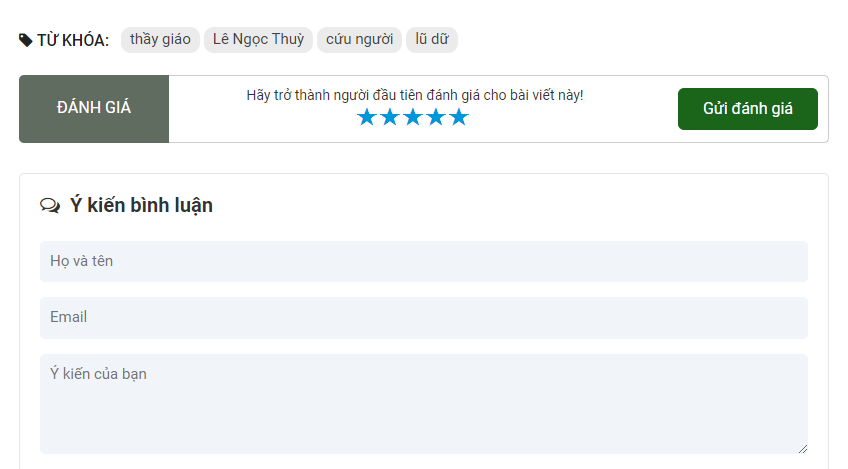
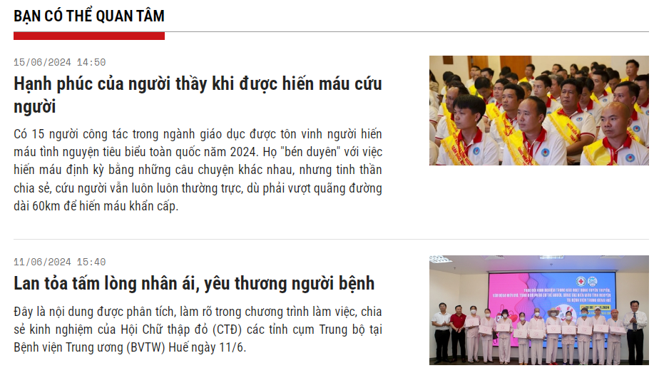

Thầy giáo dũng cảm cứu người trong lũ dữ
TTH.VN - Thầy giáo Lê Ngọc Thùy, giáo viên môn toán Trường THPT Hương Vinh đã bất chấp hiểm nguy cứu được 3 người bị nước lũ cuốn trong vụ lật chìm ghe làm 2 mẹ con chết đuối diễn ra vào sáng 15/11 tại Đập Hậu – Sông Đào thuộc địa bàn phường Hương Vinh, TP. Huế.
- Không chủ quan sau bão, lũ
- Kịp thời đưa một người dân tự ngã gây tai nạn đi cấp cứu
- Giải cứu kịp thời 3 người bị mắc kẹt bên trong thang máy

Thầy giáo Lê Ngọc Thùy cùng với các em học sinh Trường THPT Hương Vinh
Trong đợt lũ vừa qua, một chiếc ghe chở 8 người dân bị lật khi đi qua vùng nước lũ chảy xiết ở phường Hương Vinh, TP. Huế. Trong số 6 người được cứu sống, thầy giáo Lê Ngọc Thùy đã cứu được 3 người giữa dòng lũ cuốn.
Vào sáng 15/11, 8 người dân từ phường Hương Sơ, TP. Huế cùng đi ghe đến chợ Phú Hậu. Sau khi mua sắm tại chợ, chiếc ghe chở theo 8 người đi qua sông Đào Bao Vinh hướng về phía khu tái định cư Hương Sơ. Khi đi qua khu vực Đập Hậu đoạn trước kiệt 251 Đặng Tất thuộc phường Hương Vinh thì gặp nước lũ chảy xiết khiến ghe bị lật làm cả 8 người bị nước lũ cuốn trôi.
Lúc này, trời mưa rất to, nước dâng cao rất nhanh, hầu hết các khu dân cư trên địa bàn TP. Huế và các vùng lân cận mênh mông trong biển nước. Nhà thầy Lê Ngọc Thùy ở cạnh Đập Hậu, khi đang dọn lụt ở trên gác thì nghe tiếng người hô hoán kêu cứu, thầy giáo liền mở cửa nhà, vội lấy chiếc sào dài chạy xuống ngay Đập Hậu.
Thấy nhiều người đang chới với giữa dòng lũ dữ, thầy Thùy bất chấp hiểm nguy lao xuống dòng nước chảy xiết, hướng về phía những người đang cố bám vào nhánh cây trôi theo dòng sông. Bơi theo dòng nước với cây sào trên tay, trong vòng khoảng 3 phút, anh tiếp cận đưa được 2 người phụ nữ và một bé gái khoảng 10 tuổi vào bờ an toàn. Hình ảnh người thầy cố gắng vượt qua lũ dữ cứu người trong đợt lũ vừa qua được nhiều người cảm phục.
Thầy Thùy kể lại, lúc đó, trời mưa rất to, nước xiết dưới kênh Đập Hậu, tôi thấy có 3, 4 người bị cuốn chới với giữa dòng nước. Người chèo ghe cùng 2 người khác đã bơi vào được. Dưới hói gần chỗ tôi có người mẹ trẻ với đứa con gái tầm 10 tuổi ôm nhau bám vào một cành cây để cầu cứu. Cách đó vài mét, một phụ nữ cũng đang bám vào cành cây. Tôi bơi ra đưa sào kéo được 3 người vào bờ. Khi đưa được 3 người vào bờ an toàn, tôi nghe báo còn hai người nữa nhưng bơi xuôi theo dòng nước ở Đập Hậu để tìm kiếm nhưng không tìm thấy.

Với thầy giáo Lê Ngọc Thùy (người ngồi ngoài cùng bên trái), cứu người gặp hiểm nguy là điều bình thường trong cuộc sống
Hỏi thầy có sợ khi cứu người giữa tình cảnh hiểm nguy? Thầy Thùy bộc bạch: “Cái chết sao không sợ. Nhưng, gặp người bị nạn thì ai cũng giống tôi thôi, cố gắng giữ bình tĩnh để cứu người. Cứu người sắp chết tôi nghĩ là một việc làm bình thường, không có gì to tát. Lúc đó bản thân tôi có đủ khả năng để hành động. Nhiều người khác cũng có suy nghĩ như tôi nhưng họ không có khả năng thôi. Theo tôi đây là việc làm bình thường trong cuộc sống thường nhật”.
Khu vực kênh Đập Hậu, phường Hương Vinh nằm cạnh Sông Đào Bao Vinh. Theo người dân địa phương, vào mùa mưa lụt, khu vực này nước chảy xiết và xoáy rất nguy hiểm. Trong vụ chìm ghe nói trên, người dân đã cứu được 6 người an toàn, hai mẹ con còn lại bị nước lũ cuốn trôi rất thương tâm. Nếu lúc đó, thầy Thùy và những người dân trong xóm không có mặt kịp thời để cứu người thì có lẽ hậu quả còn nghiêm trọng hơn.
Hành động dũng cảm cứu người trong lũ của thầy Lê Ngọc Thùy là hình ảnh đẹp, trở thành tấm gương nhà giáo dũng cảm, không quản ngại hiểm nguy cứu người. Thầy Huỳnh Trường Thân, Hiệu trưởng Trường THPT Hương Vinh cho biết, nhà trường sẽ khen thưởng, biểu dương hành động dũng cảm cứu người của thầy giáo Lê Ngọc Thùy trong buổi chào cờ đầu tuần tới.
Ông cho biết: “Thầy Thùy là người tâm huyết với nghề, là giáo viên dạy giỏi cấp tỉnh. Thầy luôn quan tâm những người yếu thế và hay giúp người gặp hoạn nạn, làm việc thiện nguyện nên việc thầy bất chấp hiểm nguy cứu người cũng không bất ngờ. Thầy Thùy cũng rất khiêm tốn, cứu người vậy nhưng hôm sau đến trường làm vệ sinh, khi tôi hỏi vụ lật ghe xảy ra gần nhà thầy, thầy vô tình kể thì mọi người mới biết”.
MINH HIỀN
 